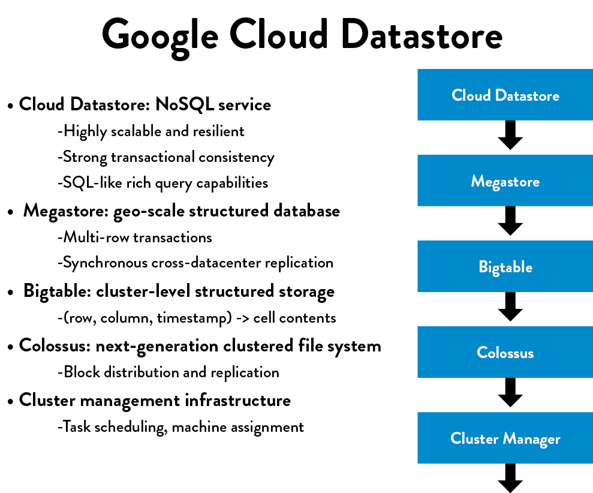
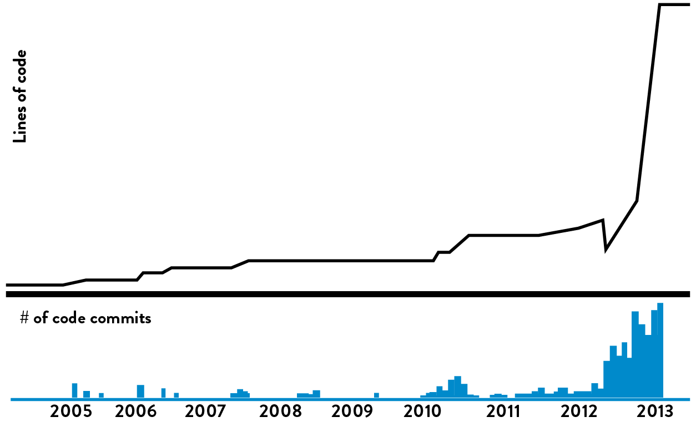

13Architect for Low-Risk Releases
Almost every well-known DevOps exemplar has had near-death experiences due to architectural problems, such as in the stories presented about LinkedIn, Google, eBay, Amazon, and Etsy. In each case, they were able to successfully migrate to a more suitable architecture that addressed their current problems and organizational needs.
This is the principle of evolutionary architecture—Jez Humble observes that architecture of “any successful product or organization will necessarily evolve over its life cycle.” Before his tenure at Google, Randy Shoup served as chief engineer and distinguished architect at eBay from 2004 to 2011. He observes that “both eBay and Google are each on their fifth entire rewrite of their architecture from top to bottom.”
He reflects, “Looking back with 20/20 hindsight, some technology [and architectural choices] look prescient and others look shortsighted. Each decision most likely best served the organizational goals at the time. If we had tried to implement the 1995 equivalent of micro-services out of the gate, we would have likely failed, collapsing under our own weight and probably taking the entire company with us.”†
The challenge is how to keep migrating from the architecture we have to the architecture we need. In the case of eBay, when they needed to re-architect, they would first do a small pilot project to prove to themselves that they understood the problem well enough to even undertake the effort. For instance, when Shoup’s team was planning on moving certain portions of the site to full-stack Java in 2006, they looked for the area that would get them the biggest bang for their buck by sorting the site pages by revenue produced. They chose the highest revenue areas, stopping when there was not enough of a business return to justify the effort.
What Shoup’s team did at eBay is a textbook example of evolutionary design, using a technique called the strangler application pattern—instead of “ripping out and replacing” old services with architectures that no longer support our organizational goals, we put the existing functionality behind an API and avoid making further changes to it. All new functionality is then implemented in the new services that use the new desired architecture, making calls to the old system when necessary.
The strangler application pattern is especially useful for helping migrate portions of a monolithic application or tightly-coupled services to one that is more loosely-coupled. All too often, we find ourselves working within an architecture that has become too tightly-coupled and too interconnected, often having been created years (or decades) ago.
The consequences of overly tight architectures are easy to spot: every time we attempt to commit code in to trunk or release code in to production, we risk creating global failures (e.g., we break everyone else’s tests and functionality, or the entire site goes down). To avoid this, every small change requires enormous amounts of communication and coordination over days or weeks, as well as approvals from any group that could potentially be affected. Deployments become problematic as well—the number of changes that are batched together for each deployment grows, further complicating the integration and test effort, and increasing the already high likelihood of something going wrong.
Even deploying small changes may require coordinating with hundreds (or even thousands) of other developers, with any one of them able to create a catastrophic failure, potentially requiring weeks to find and fix the problem. (This results in another symptom: “My developers spend only 15% of their time coding—the rest of their time is spent in meetings.”)
These all contribute to an extremely unsafe system of work, where small changes have seemingly unknowable and catastrophic consequences. It also often contributes to a fear of integrating and deploying our code, and the self-reinforcing downward spiral of deploying less frequently.
From an enterprise architecture perspective, this downward spiral is the consequence of the Second Law of Architectural Thermodynamics, especially in large, complex organizations. Charles Betz, author of Architecture and Patterns for IT Service Management, Resource Planning, and Governance: Making Shoes for the Cobbler’s Children, observes, “[IT project owners] are not held accountable for their contributions to overall system entropy.” In other words, reducing our overall complexity and increasing the productivity of all our development teams is rarely the goal of an individual project.
In this chapter, we will describe steps we can take to reverse the downward spiral, review the major architectural archetypes, examine the attributes of architectures that enable developer productivity, testability, deployability, and safety, as well as evaluate strategies that allow us to safely migrate from whatever current architecture we have to one that better enables the achievement of our organizational goals.
AN ARCHITECTURE THAT ENABLES PRODUCTIVITY, TESTABILITY, AND SAFETY
In contrast to a tightly-coupled architecture that can impede everyone’s productivity and ability to safely make changes, a loosely-coupled architecture with well-defined interfaces that enforce how modules connect with each other promotes productivity and safety. It enables small, productive, two-pizza teams that are able to make small changes that can be safely and independently deployed. And because each service also has a well-defined API, it enables easier testing of services and the creation of contracts and SLAs between teams.
 Figure 22: Google cloud datastore (Source: Shoup, “From the Monolith to Micro-services.”)
As Randy Shoup describes, “This type of architecture has served Google extremely well—for a service like Gmail, there’s five or six other layers of services underneath it, each very focused on a very specific function. Each service is supported by a small team, who builds it and runs their functionality, with each group potentially making different technology choices. Another example is the Google Cloud Datastore service, which is one of the largest NoSQL services in the world—and yet it is supported by a team of only about eight people, largely because it is based on layers upon layers of dependable services built upon each other.”
This kind of service-oriented architecture allows small teams to work on smaller and simpler units of development that each team can deploy independently, quickly, and safely. Shoup notes, “Organizations with these types of architectures, such as Google and Amazon, show how it can impact organizational structures, [creating] flexibility and scalability. These are both organizations with tens of thousands of developers, where small teams can still be incredibly productive.”
ARCHITECTURAL ARCHETYPES: MONOLITHS VS. MICROSERVICES
At some point in their history, most DevOps organizations were hobbled by tightly-coupled, monolithic architectures that—while extremely successful at helping them achieve product/market fit—put them at risk of organizational failure once they had to operate at scale (e.g., eBay’s monolithic C++ application in 2001, Amazon’s monolithic OBIDOS application in 2001, Twitter’s monolithic Rails front-end in 2009, and LinkedIn’s monolithic Leo application in 2011). In each of these cases, they were able to re-architect their systems and set the stage not only to survive, but also to thrive and win in the marketplace.
Monolithic architectures are not inherently bad—in fact, they are often the best choice for an organization early in a product life cycle. As Randy Shoup observes, “There is no one perfect architecture for all products and all scales. Any architecture meets a particular set of goals or range of requirements and constraints, such as time to market, ease of developing functionality, scaling, etc. The functionality of any product or service will almost certainly evolve over time—it should not be surprising that our architectural needs will change as well. What works at scale 1x rarely works at scale 10x or 100x.”
Table 3: Architectural archetypes
(Source: Shoup, “From the Monolith to Micro-services.”)
The major architectural archetypes are shown in table 3, each row indicates a different evolutionary need for an organization, with each column giving the pros and cons of each of the different archetypes. As the table shows, a monolithic architecture that supports a startup (e.g., rapid prototyping of new features, and potential pivots or large changes in strategies) is very different from an architecture that needs hundreds of teams of developers, each of whom must be able to independently deliver value to the customer. By supporting evolutionary architectures, we can ensure that our architecture always serves the current needs of the organization.
Case Study
Evolutionary Architecture at Amazon (2002)
One of the most studied architecture transformations occurred at Amazon. In an interview with ACM Turing Award-winner and Microsoft Technical Fellow Jim Gray, Amazon CTO Werner Vogels explains that Amazon.com started in 1996 as a “monolithic application, running on a web server, talking to a database on the back end. This application, dubbed Obidos, evolved to hold all the business logic, all the display logic, and all the functionality that Amazon eventually became famous for: similarities, recommendations, Listmania, reviews, etc.”
As time went by, Obidos grew too tangled, with complex sharing relationships meaning individual pieces could not be scaled as needed. Vogels tells Gray that this meant “many things that you would like to see happening in a good software environment couldn’t be done anymore; there were many complex pieces of software combined into a single system. It couldn’t evolve anymore.”
Describing the thought process behind the new desired architecture, he tells Gray, “We went through a period of serious introspection and concluded that a service-oriented architecture would give us the level of isolation that would allow us to build many software components rapidly and independently.”
Vogels notes, “The big architectural change that Amazon went through in the past five years [from 2001–2005] was to move from a two-tier monolith to a fully-distributed, decentralized, services platform serving many different applications. A lot of innovation was necessary to make this happen, as we were one of the first to take this approach.” The lessons from Vogel’s experience at Amazon that are important to our understanding of architecture shifts include the following:
- Lesson 1: When applied rigorously, strict service orientation is an excellent technique to achieve isolation; you achieve a level of ownership and control that was not seen before.
- Lesson 2: Prohibiting direct database access by clients makes performing scaling and reliability improvements to your service state possible without involving your clients.
- Lesson 3: Development and operational process greatly benefits from switching to service-orientation. The services model has been a key enabler in creating teams that can innovate quickly with a strong customer focus. Each service has a team associated with it, and that team is completely responsible for the service—from scoping out the functionality to architecting, building, and operating it.
The extent to which applying these lessons enhances developer productivity and reliability is breathtaking. In 2011, Amazon was performing approximately fifteen thousands deployments per day. By 2015, they were performing nearly 136,000 deployments per day.
USE THE STRANGLER APPLICATION PATTERN TO SAFELY EVOLVE OUR ENTERPRISE ARCHITECTURE
The term strangler application was coined by Martin Fowler in 2004 after he was inspired by seeing massive strangler vines during a trip to Australia, writing, “They seed in the upper branches of a fig tree and gradually work their way down the tree until they root in the soil. Over many years they grow into fantastic and beautiful shapes, meanwhile strangling and killing the tree that was their host.”
If we have determined that our current architecture is too tightly-coupled, we can start safely decoupling parts of the functionality from our existing architecture. By doing this, we enable teams supporting the decoupled functionality to independently develop, test, and deploy their code into production with autonomy and safety, and reduce architectural entropy.
As described earlier, the strangler application pattern involves placing existing functionality behind an API, where it remains unchanged, and implementing new functionality using our desired architecture, making calls to the old system when necessary. When we implement strangler applications, we seek to access all services through versioned APIs, also called versioned services or immutable services.
Versioned APIs enable us to modify the service without impacting the callers, which allows the system to be more loosely-coupled—if we need to modify the arguments, we create a new API version and migrate teams who depend on our service to the new version. After all, we are not achieving our re-architecting goals if we allow our new strangler application to get tightly-coupled into other services (e.g., connecting directly to another service’s database).
If the services we call do not have cleanly-defined APIs, we should build them or at least hide the complexity of communicating with such systems within a client library that has a cleanly defined API.
By repeatedly decoupling functionality from our existing tightly-coupled system, we move our work into a safe and vibrant ecosystem where developers can be far more productive resulting in the legacy application shrinking in functionality. It might even disappear entirely as all the needed functionality migrates to our new architecture.
By creating strangler applications, we avoid merely reproducing existing functionality in some new architecture or technology—often, our business processes are far more complex than necessary due to the idiosyncrasies of the existing systems, which we will end up replicating. (By researching the user, we can often re-engineer the process so that we can design a far simpler and more streamlined means to achieving the business goal.)‡
An observation from Martin Fowler underscores this risk: “Much of my career has involved rewrites of critical systems. You would think such a thing is easy—just make the new one do what the old one did. Yet they are always much more complex than they seem, and overflowing with risk. The big cut-over date looms, and the pressure is on. While new features (there are always new features) are liked, old stuff has to remain. Even old bugs often need to be added to the rewritten system.”
As with any transformation, we seek to create quick wins and deliver early incremental value before continuing to iterate. Up-front analysis helps us identify the smallest possible piece of work that will usefully achieve a business outcome using the new architecture.
Case Study
Strangler Pattern at Blackboard Learn (2011)
Blackboard Inc. is one of the pioneers of providing technology for educational institutions, with annual revenue of approximately $650 million in 2011. At that time, the development team for their flagship Learn product, packaged software that was installed and run on-premise at their customer sites, was living with the daily consequences of a legacy J2EE codebase that went back to 1997. As David Ashman, their chief architect, observes, “we still have fragments of Perl code still embedded throughout our codebase.”
In 2010, Ashman was focused on the complexity and growing lead times associated with the old system, observing that “our build, integration, and testing processes kept getting more and more complex and error prone. And the larger the product got, the longer our lead times and the worse the outcomes for our customers. To even get feedback from our integration process would require twenty-four to thirty-six hours.”
 Figure 23: Blackboard Learn code repository: before Building Blocks (Source: “DOES14 - David Ashman - Blackboard Learn - Keep Your Head in the Clouds,” YouTube video, 30:43, posted by DevOps Enterprise Summit 2014, October 28, 2014, https://www.youtube.com/watch?v=SSmixnMpsI4.)
Figure 23: Blackboard Learn code repository: before Building Blocks (Source: “DOES14 - David Ashman - Blackboard Learn - Keep Your Head in the Clouds,” YouTube video, 30:43, posted by DevOps Enterprise Summit 2014, October 28, 2014, https://www.youtube.com/watch?v=SSmixnMpsI4.)
How this started to impact developer productivity was made visible to Ashman in graphs generated from their source code repository going all the way back to 2005.
In figure 24, the top graph represents the number of lines of code in the monolithic Blackboard Learn code repository; the bottom graph represents the number of code commits. The problem that became evident to Ashman was that the number of code commits started to decrease, objectively showing the increasing difficulty of introducing code changes, while the number of lines of code continued to increase. Ashman noted, “To me, it said we needed to do something, otherwise the problems would keep getting worse, with no end in sight.”
As a result, in 2012 Ashman focused on implementing a code re-architecturing project that used the strangler pattern. The team accomplished this by creating what they internally called Building Blocks, which allowed developers to work in separate modules that were decoupled from the monolithic codebase and accessed through fixed APIs. This enabled them to work with far more autonomy, without having to constantly communicate and coordinate with other development teams.
 Figure 24: Blackboard Learn code repository: after Building Blocks (Source: “DOES14 - David Ashman - Blackboard Learn - Keep Your Head in the Clouds.” YouTube video, 30:43, posted by DevOps Enterprise Summit 2014, October 28, 2014, https://www.youtube.com/watch?v=SSmixnMpsI4.)
When Building Blocks were made available to developers, the size of the monolith source code repository began to decrease (as measured by number of lines of code). Ashman explained that this was because developers were moving their code into the Building Block modules source code repository. “In fact,” Ashman reported, “every developer given a choice would work in the Building Block codebase, where they could work with more autonomy and freedom and safety.”
The graph above shows the connection between the exponential growth in the number of lines of code and the exponential growth of the number of code commits for the Building Blocks code repositories. The new Building Blocks codebase allowed developers to be more productive, and they made the work safer because mistakes resulted in small, local failures instead of major catastrophes that impacted the global system.
Ashman concluded, “Having developers work in the Building Blocks architecture made for impressive improvements in code modularity, allowing them to work with more independence and freedom. In combination with the updates to our build process, they also got faster, better feedback on their work, which meant better quality. ”
CONCLUSION
To a large extent, the architecture that our services operate within dictates how we test and deploy our code. This was validated in Puppet Labs’ 2015 State of DevOps Report, showing that architecture is one of the top predictors of the productivity of the engineers that work within it and of how changes can be quickly and safely made.
Because we are often stuck with architectures that were optimized for a different set of organizational goals, or for an era long-passed, we must be able to safely migrate from one architecture to another. The case studies presented in this chapter, as well as the Amazon case study previously presented, describe techniques like the strangler pattern that can help us migrate between architectures incrementally, enabling us to adapt to the needs of the organization.
PART III CONCLUSION
Within the previous chapters of Part III, we have implemented the architecture and technical practices that enable the fast flow of work from Dev to Ops, so that value can be quickly and safely delivered to customers.
In Part IV: The Second Way, The Technical Practices of Feedback, we will create the architecture and mechanisms to enable the reciprocal fast flow of feedback from right to left, to find and fix problems faster, radiate feedback, and ensure better outcomes from our work. This enables our organization to further increase the rate at which it can adapt.

Table of contents
- Preface
- Foreword
- Imagine a World Where Dev and Ops Become DevOps
-
Part I The Three Ways
- A BRIEF HISTORY
- 1 Agile, Continuous Delivery, and the Three Ways
- 2 The First Way: The Principles of Flow
- 3 The Second Way: The Principles of Feedback
- 4 The Third Way: The Principles of Continual Learning and Experimentation
-
Part II Where to Start
- Introduction
- 5 Selecting Which Value Stream to Start With
- 6 Understanding the Work in Our Value Stream, Making it Visible, and Expanding it Across the Organization
-
7 How to Design Our Organization and Architecture with Conway’s Law in Mind
- ORGANIZATIONAL ARCHETYPES
- PROBLEMS OFTEN CAUSED BY OVERLY FUNCTIONAL ORIENTATION (“OPTIMIZING FOR COST”)
- ENABLE MARKET-ORIENTED TEAMS (“OPTIMIZING FOR SPEED”)
- MAKING FUNCTIONAL ORIENTATION WORK
- TESTING, OPERATIONS, AND SECURITY AS EVERYONE’S JOB, EVERY DAY
- ENABLE EVERY TEAM MEMBER TO BE A GENERALIST
- FUND NOT PROJECTS, BUT SERVICES AND PRODUCTS
- DESIGN TEAM BOUNDARIES IN ACCORDANCE WITH CONWAY’S LAW
- CREATE LOOSELY-COUPLED ARCHITECTURES TO ENABLE DEVELOPER PRODUCTIVITY AND SAFETY
- CONCLUSION
- 8 How to Get Great Outcomes by Integrating Operations into the Daily Work of Development
-
PART III—THE FIRST WAY: THE TECHNICAL PRACTICES OF FLOW
- 9 Create the Foundations of Our Deployment Pipeline
-
10 Enable Fast and Reliable Automated Testing
- CONTINUOUSLY BUILD, TEST, AND INTEGRATE OUR CODE AND ENVIRONMENTS
-
BUILD A FAST AND RELIABLE AUTOMATED VALIDATION TEST SUITE
- CATCH ERRORS AS EARLY IN OUR AUTOMATED TESTING AS POSSIBLE
- ENSURE TESTS RUN QUICKLY (IN PARALLEL, IF NECESSARY)
- WRITE OUR AUTOMATED TESTS BEFORE WE WRITE THE CODE (“TEST-DRIVEN DEVELOPMENT”)
- AUTOMATE AS MANY OF OUR MANUAL TESTS AS POSSIBLE
- INTEGRATE PERFORMANCE TESTING INTO OUR TEST SUITE
- INTEGRATE NON-FUNCTIONAL REQUIREMENTS TESTING INTO OUR TEST SUITE
- PULL OUR ANDON CORD WHEN THE DEPLOYMENT PIPELINE BREAKS
- CONCLUSION
- 11 Enable and Practice Continuous Integration
- 12 Automate and Enable Low-Risk Releases
- 13 Architect for Low-Risk Releases
-
PART IV—THE SECOND WAY: THE TECHNICAL PRACTICES OF FEEDBACK
- Introduction
-
14 Create Telemetry to Enable Seeing and Solving Problems
- CREATE OUR CENTRALIZED TELEMETRY INFRASTRUCTURE
- CREATE APPLICATION LOGGING TELEMETRY THAT HELPS PRODUCTION
- USE TELEMETRY TO GUIDE PROBLEM SOLVING
- ENABLE CREATION OF PRODUCTION METRICS AS PART OF DAILY WORK
- CREATE SELF-SERVICE ACCESS TO TELEMETRY AND INFORMATION RADIATORS
- FIND AND FILL ANY TELEMETRY GAPS
- CONCLUSION
- 15 Analyze Telemetry to Better Anticipate Problems and Achieve Goals
- 16 Enable Feedback So Development and Operations Can Safely Deploy Code
- 17 Integrate Hypothesis-Driven Development and A/B Testing into Our Daily Work
-
18 Create Review and Coordination Processes to Increase Quality of Our Current Work
- THE DANGERS OF CHANGE APPROVAL PROCESSES
- POTENTIAL DANGERS OF “OVERLY CONTROLLING CHANGES”
- ENABLE COORDINATION AND SCHEDULING OF CHANGES
- ENABLE PEER REVIEW OF CHANGES
- POTENTIAL DANGERS OF DOING MORE MANUAL TESTING AND CHANGE FREEZES
- ENABLE PAIR PROGRAMMING TO IMPROVE ALL OUR CHANGES
- FEARLESSLY CUT BUREAUCRATIC PROCESSES
- CONCLUSION
- PART IV CONCLUSION
-
PART V—THE THIRD WAY: THE TECHNICAL PRACTICES OF CONTINUAL LEARNING AND EXPERIMENTATION
- Introduction
-
19 Enable and Inject Learning into Daily Work
- ESTABLISH A JUST, LEARNING CULTURE
- SCHEDULE BLAMELESS POST-MORTEM MEETINGS AFTER ACCIDENTS OCCUR
- PUBLISH OUR POST-MORTEMS AS WIDELY AS POSSIBLE
- DECREASE INCIDENT TOLERANCES TO FIND EVER-WEAKER FAILURE SIGNALS
- REDEFINE FAILURE AND ENCOURAGE CALCULATED RISK-TAKING
- INJECT PRODUCTION FAILURES TO ENABLE RESILIENCE AND LEARNING
- INSTITUTE GAME DAYS TO REHEARSE FAILURES
- CONCLUSION
-
20 Convert Local Discoveries into Global Improvements
- USE CHAT ROOMS AND CHAT BOTS TO AUTOMATE AND CAPTURE ORGANIZATIONAL KNOWLEDGE
- AUTOMATE STANDARDIZED PROCESSES IN SOFTWARE FOR RE-USE
- CREATE A SINGLE, SHARED SOURCE CODE REPOSITORY FOR OUR ENTIRE ORGANIZATION
- SPREAD KNOWLEDGE BY USING AUTOMATED TESTS AS DOCUMENTATION AND COMMUNITIES OF PRACTICE
- DESIGN FOR OPERATIONS THROUGH CODIFIED NON-FUNCTIONAL REQUIREMENTS
- BUILD REUSABLE OPERATIONS USER STORIES INTO DEVELOPMENT
- ENSURE TECHNOLOGY CHOICES HELP ACHIEVE ORGANIZATIONAL GOALS
- CONCLUSION
- 21 Reserve Time to Create Organizational Learning and Improvement
-
22 Information Security as Everyone’s Job, Every Day
- INTEGRATE SECURITY INTO DEVELOPMENT ITERATION DEMONSTRATIONS
- INTEGRATE SECURITY INTO DEFECT TRACKING AND POST-MORTEMS
- INTEGRATE PREVENTIVE SECURITY CONTROLS INTO SHARED SOURCE CODE REPOSITORIES AND SHARED SERVICES
- INTEGRATE SECURITY INTO OUR DEPLOYMENT PIPELINE
- ENSURE SECURITY OF THE APPLICATION
- ENSURE SECURITY OF OUR SOFTWARE SUPPLY CHAIN
- ENSURE SECURITY OF THE ENVIRONMENT
- INTEGRATE INFORMATION SECURITY INTO PRODUCTION TELEMETRY
- CREATING SECURITY TELEMETRY IN OUR APPLICATIONS
- CREATING SECURITY TELEMETRY IN OUR ENVIRONMENT
- PROTECT OUR DEPLOYMENT PIPELINE
- CONCLUSION
-
23 Protecting the Deployment Pipeline
- INTEGRATE SECURITY AND COMPLIANCE INTO CHANGE APPROVAL PROCESSES
- RE-CATEGORIZE THE MAJORITY OF OUR LOWER RISK CHANGES AS STANDARD CHANGES
- WHAT TO DO WHEN CHANGES ARE CATEGORIZED AS NORMAL CHANGES
- REDUCE RELIANCE ON SEPARATION OF DUTY
- ENSURE DOCUMENTATION AND PROOF FOR AUDITORS AND COMPLIANCE OFFICERS
- CONCLUSION
- PART VI CONCLUSION
- A Call to Action
-
Appendices
- APPENDIX 1 THE CONVERGENCE OF DEVOPS
- APPENDIX 2 THEORY OF CONSTRAINTS AND CORE, CHRONIC CONFLICTS
- APPENDIX 3 TABULAR FORM OF DOWNWARD SPIRAL
- APPENDIX 4 THE DANGERS OF HANDOFFS AND QUEUES
- APPENDIX 5 MYTHS OF INDUSTRIAL SAFETY
- APPENDIX 6 THE TOYOTA ANDON CORD
- APPENDIX 7 COTS SOFTWARE
- APPENDIX 8 POST-MORTEM MEETINGS
- APPENDIX 9 THE SIMIAN ARMY
- APPENDIX 10 TRANSPARENT UPTIME
- Additional Resources
- Endnotes
- Index
- Acknowledgments
- Author Biographies